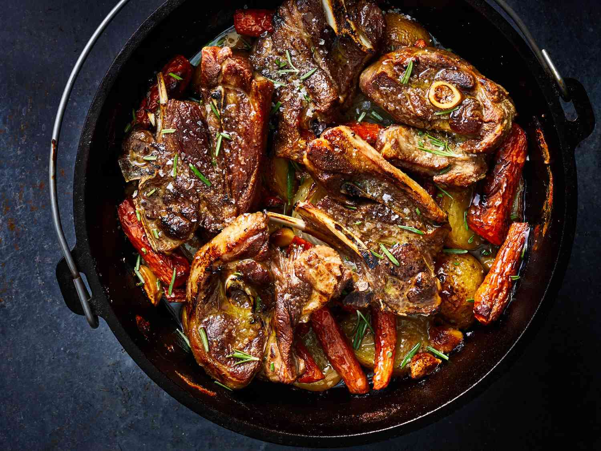

PEKA

INGREDIENTS
- 1 whole chicken or 4 chicken legs
- 4-5 large potatoes, sliced
- 2-3 onions, sliced
- 2-3 bell peppers, sliced
- 4-5 garlic cloves, sliced
- 1-2 bay leaves
- 1-2 sprigs of rosemary
- 1/2 cup of white wine
- 1/2 cup of water
- 4-5 tablespoons of olive oil
- Salt and pepper to taste
INSTRUCTIONS
- Preheat your oven to 400°F (200°C).
- Place the sliced potatoes on the bottom of a baking dish and season with salt and pepper.
- Place the chicken on top of the potatoes and season it with salt and pepper as well.
- Arrange the sliced onions, bell peppers, and garlic around the chicken.
- Drizzle the olive oil over the chicken and vegetables.
- Add the bay leaves and rosemary sprigs.
- Pour the white wine and water over the chicken and vegetables.
- Cover the baking dish tightly with aluminum foil.
- Bake the peka in the preheated oven for 1 1/2 to 2 hours, or until the chicken is fully cooked and the potatoes are tender.
- Remove the aluminum foil and bake for an additional 10-15 minutes to allow the chicken and
vegetables to brown slightly.
- Serve hot and enjoy!